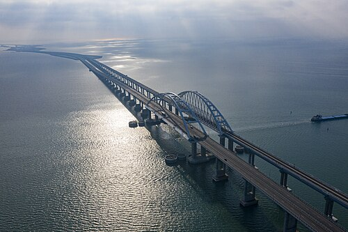

Россия обладает богатой историей мостостроения. На территории страны построены уникальные мостовые сооружения, которые соединяют различные регионы и способствуют развитию транспортной инфраструктуры.
ПодробнееМосты России строились на протяжении многих веков. Современные технологии позволяют создавать уникальные конструкции, способные выдерживать экстремальные нагрузки и погодные условия.
Вантовые и висячие мосты стали символом технического прогресса страны.
Подробнее